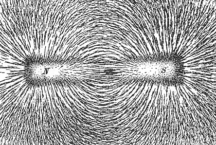

Lecture #1: Basics of the physics behind Magnetic Resonance Imaging (MRI), functional MRI, and diffusion MRI
R. Cameron Craddock, PhD Research Scientist VI, Nathan S. Kline Institute for Psychiatric Research, New York, NY Director of Imaging, Child Mind Institute, New York, NY
July 28, 2014
Magnetism
Magnetism is a force exerted by magnets, or moving electric charge, on other magnets
Magnets are materials or objects that produce magnetic fields
Magnets only exist as dipoles, with north and south poles, similar poles of different magnets repel one another, opposite poles attract
Magnetic Field

A Magnetic Field describes the influence of a magnet on its surroundings
Maxwell's correction to Ampère's law - A changing electric field, such as a current through a loop of wire, will generate a magnetic field (Electromagnet)
Faraday's Law - A changing magnetic field, such as through a conductor, generates an electric field, that will drive a current in that conductor (Receiver Coil)
Lenz's Law - The generated current will flow in a direction to generate a magnetic field which opposes the applied field
what is a magnetic field?
materials/objects in a magnetic field align with the field
magnetic fields can be generated by electrical currents
moving magnetic fields can produce current in a wire
Lorenz's law
Faraday's law
how does the strength of a magnetic field compare with other forces?
Atoms preferentially align themselves with magnetic fields
equation
Using an externally applied magnetic field, receive coil, and electronics can record current generated by spins and analyze the spectrum to determine the constituent elements in a sample - Magnetic Resonance Spectroscopy
Using a homogenous sample of known makeup (i.e. purified water), a receive coil, and electronics can measure the strenght of an external magnetic field - Proton Spin Magnetometer
Magnetic resonance imaging
magnetic resonance imaging focuses on the density of Hydrogen
one of the most abundant elements in the human body (is it the most)
spin 1/2, simplifies the physics
Uses "flip" to generate signal that is perpendicular to magnetic field and selectively excite hydrogen protons
Mxy vs. Mz
Can measure proton density from the strength of the resulting signal - show equation again
But proton density for different tissues in the brain and body are similar - no contrast
instead can rely on T1 and T2, T2* phenomena
T1 is the loss of signal in Mxy due to the realignment of proton with magnetic field
T2* is the loss of signal in Mxy due to dephasing
Motion (T2)
Inhomogeneity (T2*)
Spatial encoding can be accomplished by spatially-varying magnetic fields
change in magnetic field results in different larmor frequency
using flip can selectively excite
similar to MRS and proton spin magnetometer, frequency of spin can be used to determine location of spins
Basics of MRI machine
Big Magnet, gradient coils, RF coils, power amplifiers, electronics, etc ...